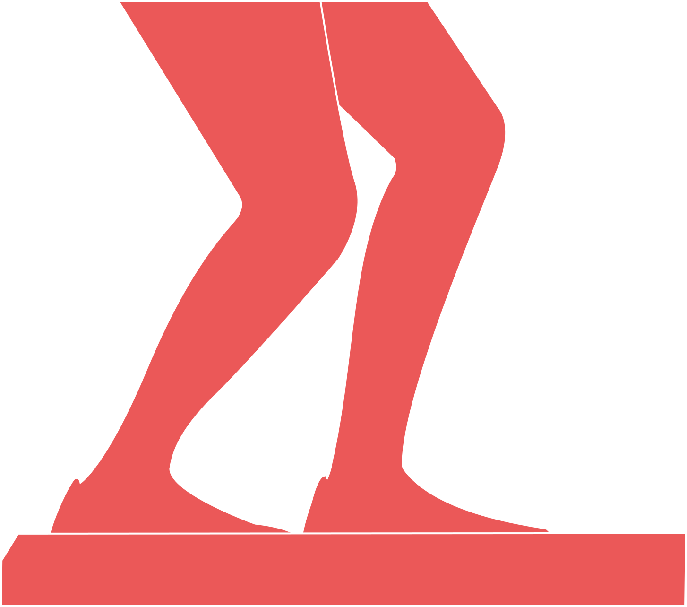
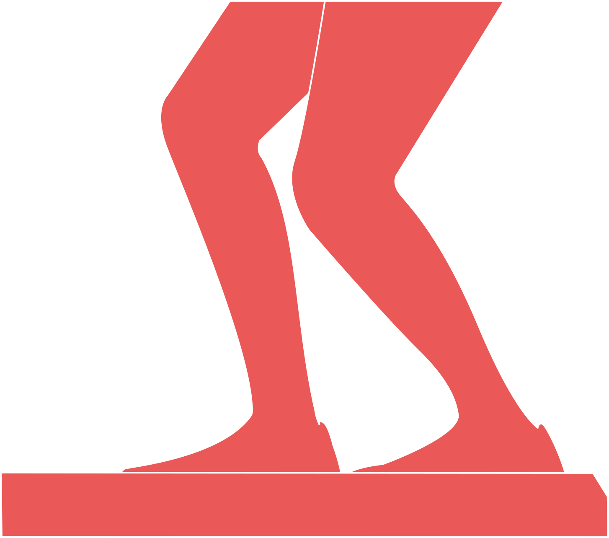

<!--
  Generated template for the ScreeningModalPage page.

  See http://ionicframework.com/docs/components/#navigation for more info on
  Ionic pages and navigation.
-->
<ion-header color="dark">
  <ion-toolbar color="dark">
    <ion-title>
      Ankle Clearing
    </ion-title>
    <ion-buttons start>
      <button ion-button (click)="dismiss()">
        <span ion-text showWhen="ios">Close</span>
        <ion-icon name="md-close" showWhen="android,windows"></ion-icon>
      </button>
    </ion-buttons>
  </ion-toolbar>
</ion-header>

<ion-content>

  <ion-list style="margin-bottom: 10px;">
    <ion-list-header color="light">
      Right Ankle Clearing
    </ion-list-header>

  </ion-list>

  <ion-grid text-center class="screening">

    <ion-row>
      <ion-col col-4 >
        <p style="margin:15px 0;"><strong>Knee position</strong></p>
        
        <ion-badge color="secondary">Behind</ion-badge>

      </ion-col>

      <ion-col col-4 >
        <p style="margin:15px 0;"><strong>Pain?</strong></p>
        
        <ion-badge color="secondary">No</ion-badge>

      </ion-col>

      <ion-col col-4 >
        <p style="margin:15px 0;"><strong>Stretch felt?</strong></p>
        
        <ion-badge color="secondary">Front of Ankle</ion-badge>

      </ion-col>


    </ion-row>
  </ion-grid>


  <ion-list style="margin-bottom: 10px;">
    <ion-list-header color="light">
      Left Ankle Clearing
    </ion-list-header>

    <ion-grid text-center class="screening">

      <ion-row>
        <ion-col col-4 >
          <p style="margin:15px 0;"><strong>Knee position</strong></p>
          
          <ion-badge color="secondary">Behind</ion-badge>

        </ion-col>

        <ion-col col-4 >
          <p style="margin:15px 0;"><strong>Pain?</strong></p>
          
          <ion-badge color="primary">Yes</ion-badge>

        </ion-col>

        <ion-col col-4 >
          <p style="margin:15px 0;"><strong>Stretch felt?</strong></p>
          
          <ion-badge color="secondary">Front of Ankle</ion-badge>

        </ion-col>


      </ion-row>
    </ion-grid>

  </ion-list>

  <button ion-button full block (click)="dismiss()" color="secondary" >Save</button>

</ion-content>